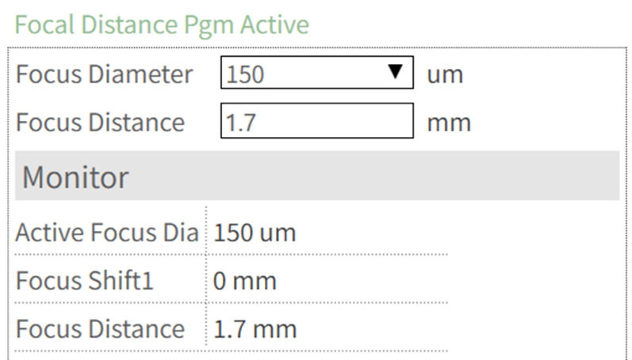
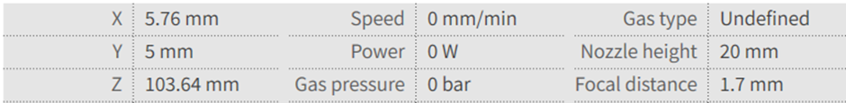

焦距
设置最佳焦距对于获得尽可能小的光斑尺寸、最大化激光的强度和精度至关重要。
有两种方式可以监控焦距的变化：
-
使用物理刻度盘
-
使用软件控制
部分激光切割头配有内置的物理刻度盘，用于显示当前的焦点位置。该视觉指示器有助于 验证聚焦电机驱动是否正常工作。
部分系统允许通过软件控制来监控焦点位置。
物理刻度盘方法仍可作为手动验证的可靠参考。
操作步骤：
要确认准直（聚焦）电机驱动工作正常，请在 焦距 程序设置中手动设置焦点位置。 输入所需值后，检查物理刻度盘是否移动到与输入值匹配的位置。
此步骤是启动任何切割程序前的重要预检查。如果物理刻度盘与设定的焦点位置不匹配， 则聚焦电机驱动可能出现故障，应在操作机器前进行检查。

-
输入的焦距值将如下所示显示：

-
如果焦点直径选择为 150 µm 或 210 µm，焦点偏移将使用 焦点梳 程序中与所选 焦点直径关联的值来调整焦距。因此，监视器上显示的焦距将为输入的焦距与焦点偏移值 之和。